Movie review by : SFAM
Year : 2006
Directed by : Laszlo Kovacs, Andrew Hookway (co-director)
Written by : Laszlo Kovacs
Degree of Cyberpunk visuals : Low
Correlation to Cyberpunk themes : Medium
Rating : 4/10
Key cast members :
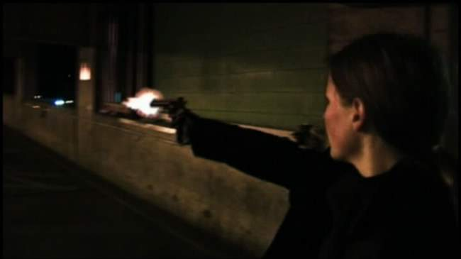
Overview: UCF: Toronto Cybercide is an attempt to create a 70s style police show done up in futuristic cyberpunk. This is a production done by an enterprising group of amateur film makers called Key Pixel: Gathering of Filmers. As a review, this is a slightly different review than many I have done previously, in that I fully realize that this movie is no-budget, and is produced by highly motivated, but amateur film makers. I had previously decided not to give it a star rating, but the more I thought about it, the more it made sense to consider it in many ways as I have the rest. This review will spend more time than most on details of what I thought really worked well, along with what I felt really needed improvement.
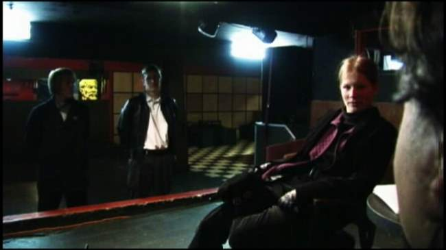
The Story UCF: Toronto Cybercide takes place over 70 years into the future. Some aspects of society have collapsed, but the police are still on the job. A team of detectives, Sue (played by Sylvia C. Andreae), a tough action chick with a cybernetic arm and Jazz (played by Andrew Hookway), an emotive family guy, are sent to investigate some strange cyber deaths, and end up getting involved in a "good cyborg gone bad" story. Here to assist with the investigation is the almost-human Marshall Pax, a cyborg from the Unified Cybernetics Foundation. Together they must root out mafia involvement and stop the Nemesis (played by Justin Monk - and what cool name for an actor!) from randomly killing Toronto's inhabitants.
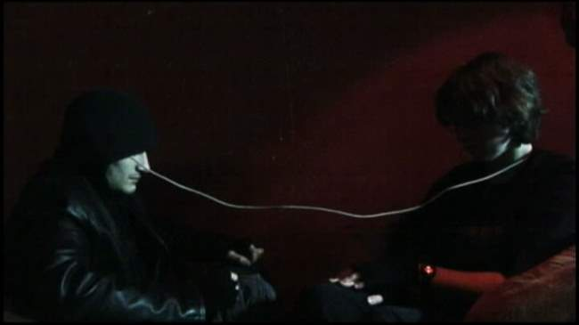
Narrative Issues: The underlying idea for Toronto Cybercide (70s cop show done in cyberpunk) is very interesting in scope, and if executed well, provides enough grist for cyberpunk enthusiasts to sink their teeth into some neat concepts. While some aspects worked well, there were a few key scenes that really could have significantly improved the overall experience.
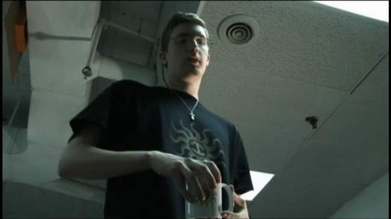
The Cinematography: Kovacs strong point seems to be in constructing some interesting visuals and textures. While many scenes were average, every now and then we'd get a terrific perspective shot, or angle which really added to the context of the scene. Toronto Cybercide is definitely at its best when going for a noir feel. Grays, blacks, overexposed whites and reds worked FAR better than the background soft yellow scenes. And while some scenes were exceptional, others, such as the dust scene sorely detract from the suspension of disbelief. Like the sound, consistency in crafting is definitely advocated.
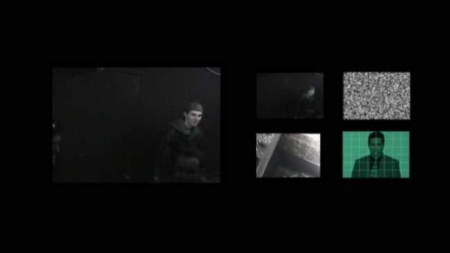
The FX: The FX is very low budget, in sort of a Dr. Who sort of way. For the most part, it works though. The laser gunshots were decent enough, and while the cybernetic arm could have been better, Andreae (Sue) worked it very effectively in the action scenes to the point that it was very believable. Perhaps the coolest one, as was pointed out on the directors commentary was the knife in the book in the Club Red scene ? this just worked wonderfully and really helped sell Sue's strength. Also terrific though was the Luddite TV screen - this more than any other FX scene left a sense of a different time and place.
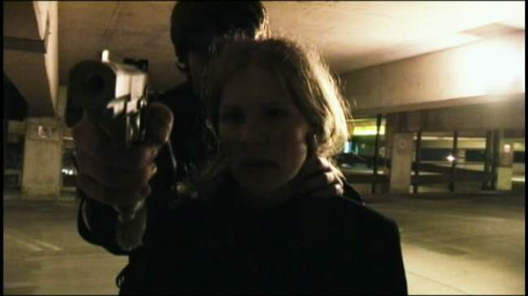
The Editing: For the most part, the visual editing in Toronto Cybercide really works. The pacing is solid, and most all of the investigation and action scenes work. In particular, the early battles and chase scenes really held together well, while the last fight scene came across as a tad too haphazard. The only early shot that really stuck out as wildly problematic was a quick camera jerk near the beginning when the long-haired minion was bitching about following "his part of the deal." This could have been spliced a bit to become more workable.
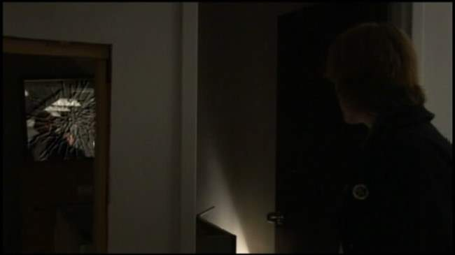
The Acting: The acting in Toronto Cybercide is far from top notch ? then again, this is to be expected in an amateur production. As a clear standout, Bryan Patrick Stoyle as Marshall Pax turns in a very credible performance as a stoic, post-human cyborg. More problematic were the two cops, Sylvia Andreae and Andrew Hookway. Part of the issue is they are attempting to be your traditional 15 year, jaded cop types ? this was just a hard sell both due to their age, and unfamiliarity with jaded cop stuff. From a narrative perspective, their performance would be greatly aided had it been set up that most cops had already been wiped out, and that these were junior cops thrust into events greater than they were experienced to handle. This would have played far better to their age, character development and overall performance. If there was one change I would make though, it would be eliminating Kovacs' Matrix Merovingian nod ? that scene in the Club Red CLEARLY indicates how good an actor Lambert Wilson in the Matrix sequels really is. Kovacs' acting works well in most scenes, but that dialogue stretch will get a deservedly horrid groan from all viewers.
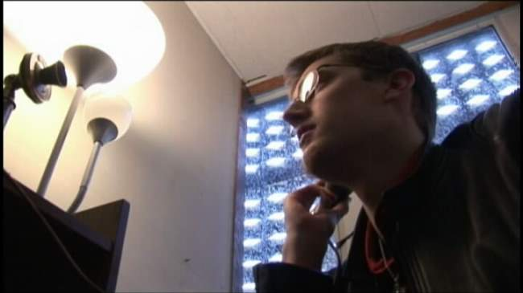
The Music: For the most part, the electronic music accompaniment is one of the best crafted aspects of Toronto Cybercide, and adds well to the mood of many scenes. Simple movement music, such as the background for the train station scene, work wonderfully to pick up the pace. The best use of sound accompaniment was probably the emotive flashbacks that Marshall Pax. The worst was definitely the ending battle. There the music was sort of a slow, ongoing, day to day sound for a scene that needed high tension, fast paced accompaniment.
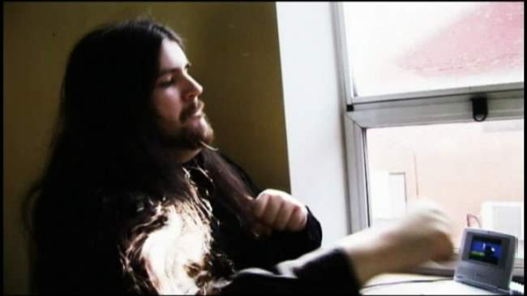
The Sound: The sound in Toronto Cybercide is sometimes great, sometimes horrid. In most scenes, we get either great background sounds or solid transfer's of action from the left to right speakers, that carefully mimic the movement of those on-screen. These, when combined with the fast-paced electronic background accompaniment really add to the moment. In some scenes, the mix clearly needs LOTS more work ? all too often the levels seem to shift dramatically, especially with the inclusion of needless white noise (the kitchen scene is probably the worst instance of this). Far worse though was a scene near the beginning - we even get an ultra-loud, high pitch sound that dominates the speakers for no particular reason ? this occurs a time or two later as well. Aside from this though, clearly a lot of work to the sound FX.
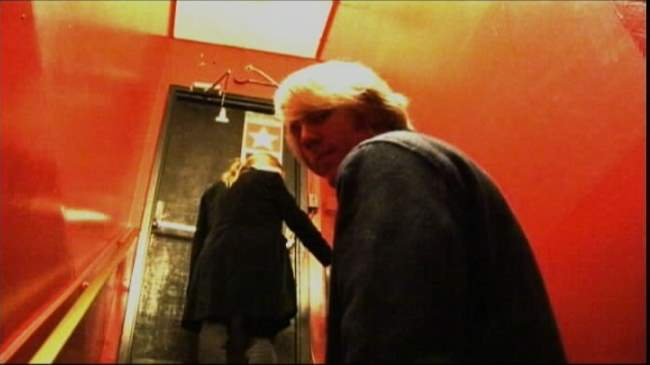
Best line of the movie - "Not once... did he try to grab my ass."
Creating a Cyberpunked World Without A Budget: One of the real challenges that Kovacs and company deal with is creating a futuristic cyberpunked world on no budget. I must applaud them for making an attempt such as this, and truly hope to see more efforts such as this. Their challenge is especially problematic in that they are basically stuck with their local surroundings. Kovacs often addresses this by almost attempting to do sort of a staged play approach, where most scenes take place in barren rooms - the audience is left to fill in the details for themselves. He also attempts retrograde technology approaches, such as using 1940s phones for communications. And while some of the scenes work well, there is clearly a lot to be improved. In too many shots, we get close-ups of current year cars, lamps, and a myriad of other current-technology items that suspend disbelief. A better approach might have been to use close-up shots in cars, and so forth so as not to give away the actual "look" of the vehicle used. If they are forced to show these things, there needs to be something in the intro about describing why technology hasn't advanced (as a counterpoint, Puzzlehead does fairly decent world-building rationales on a very low budget). In truth, the explanation on the movie cover is almost required to get the jist of the world:
In 2078 something had stopped the motor of the world.
Decades later, civilization is still recovering from the global network crash. In this post-dystopian age, remnants of the old technologies remain, including cyborgs and man-machine interfaces. To regulate the disaffected remnants - colloquially known as 'Burnouts' - the Unified Cybernetics Foundation is formed to deal with post-human law enforcement.
It is now 2106, one hundred years in the present. When two Toronto police detectives are caught in the middle of a specific multiple murder case involving Burnouts, UCF sends one of their Marshals to assist.
And when the Foundation gets involved, nothing is ever simple.
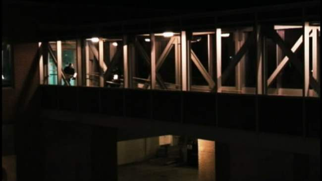
Toronto Cybercide works best in darker, shadow-filled scenes such as the shot above. A Noir look is a useful way of getting around technology shortcomings. More problematic though is the lack of exploration of the dynamics of the world itself. On Kovacs and Hookway's commentary, they mention the concern in spending too much time on expository scenes. While I agree with the concern, this isn't the only way the technology impacts on society can be conveyed. Character explorations and build-ins to the scenes themselves provide the grist for world building. Case in point ? early in the film, our detectives do the traditional intro talk with the police chief. This would be a great scene for providing insight on how a police station might work differently in a cyberpunked world 100 years from now - instead, we get the chief typing away on a keyboard while staring at a CRT monitor. How about an earpiece, possibly an eye cover, and a VR glove where the police chief is interacting with a large flat screen? We wouldn't even need to see the flatscreen to get a sense that things are different. If this makes no sense due to degredation in the technology, I'm sure that there could have been some way of conveying difference in surroundings here, without resorting to high-tech FX.
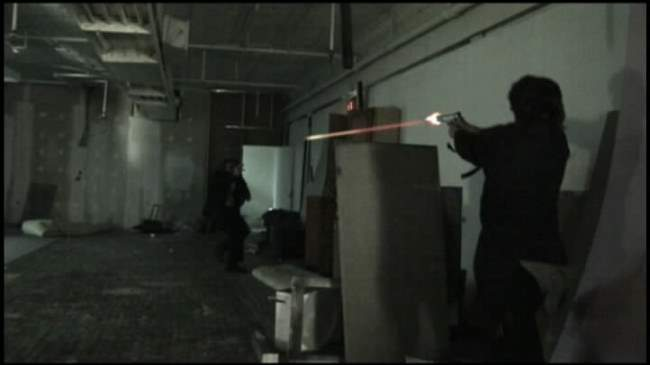
UCF Toronoto Cybercide - When Good Cyborgs Go Bad: The underlying challenge involves a specially trained marshall cyborg (the Nemesis) infected with a signal contagion. This contagion creates a complex dynamic where the Nemesis' human portion is working hard not to allow the infection to spread, while at the same time, he is no longer in control of his actions. In an environment where we see a continual merging of man and machine, its only a matter of time before issues like this become a concern. The psychological aspect of an augmented person losing a battle over his humanity is definitely something that should require more examination. While not as explored as I much as I would have liked, the idea here is top notch, and definitely separates Toronto Cybercide from the bottom of the barrel cyberpunk flicks which don't bother with interesting storylines.
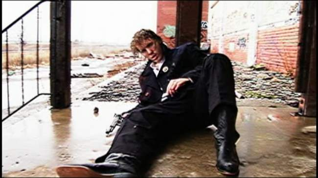
The Bottom Line: UCF: Toronto Cybercide provides us an interesting, no-budget cyberpunk flick. I can only imagine the amount of decidation that goes in to a project such as this - in many instances this clearly shows. In some places, such as the "mood" moments, it clearly excels. Every now and then, you find a scene where everything comes together - the sound, visuals and acting have moments of riviting clarity. Some of the cinematography decisions, the pacing, the music and some fun dialogue lines serve to create a fun watching experience. Moreso, the 70s cop cyberpunk idea works. However, there are many areas where significant opportunities for improvement can be realized. If a sequel is enacted, a better explanation of the world is necessary, along with a better way of hiding current technologies. More important though would be a dramatically improved sense of consistency in the sound and visuals crafting. This more than anything else gives would move Key Pixel Productions from amateur status to that of a professional, low budget production house. Regardless, UCF: Toronto Cybercide is still a fun watch, one that I recommend you pick up.